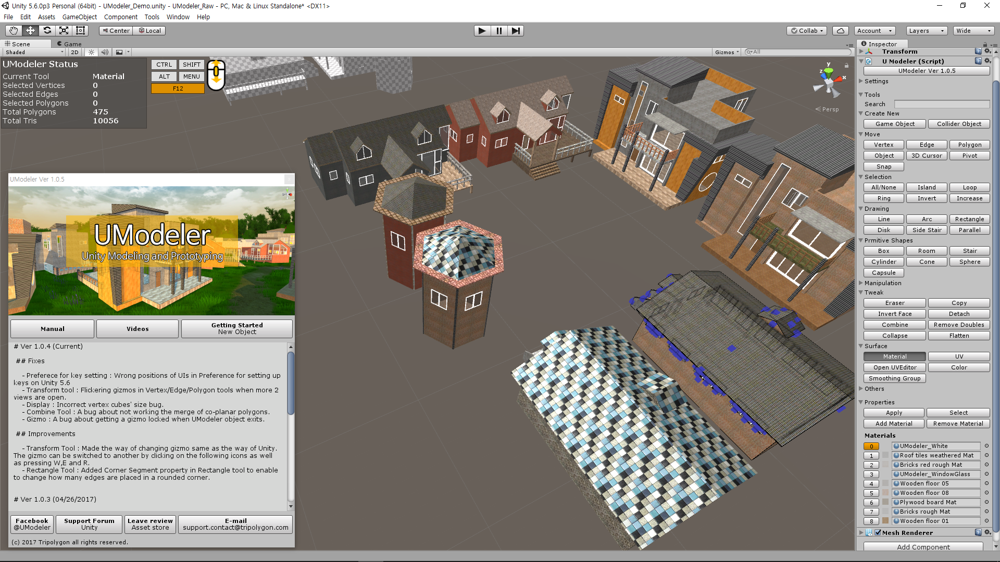
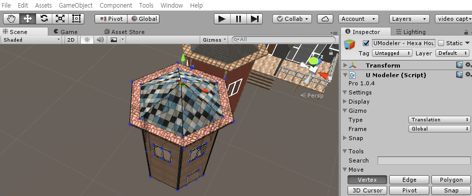
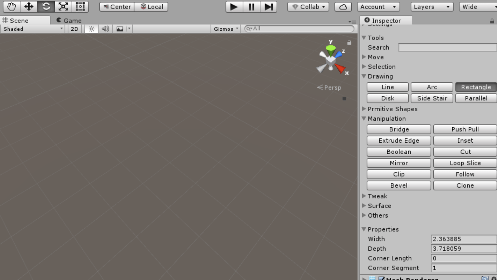
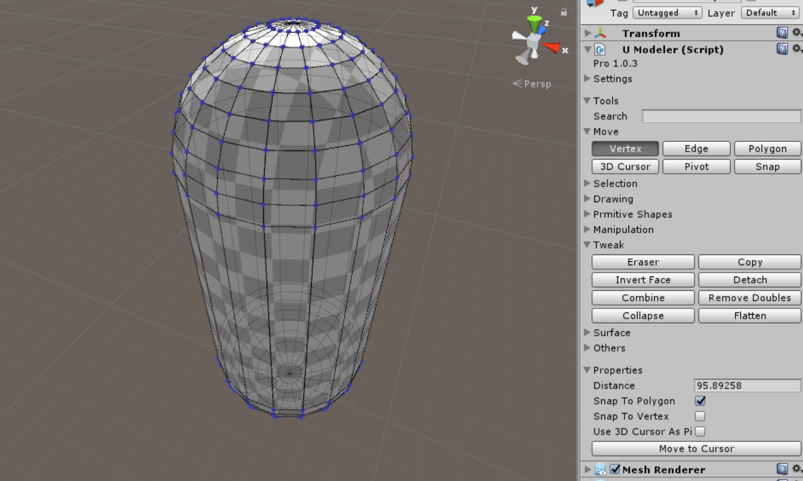
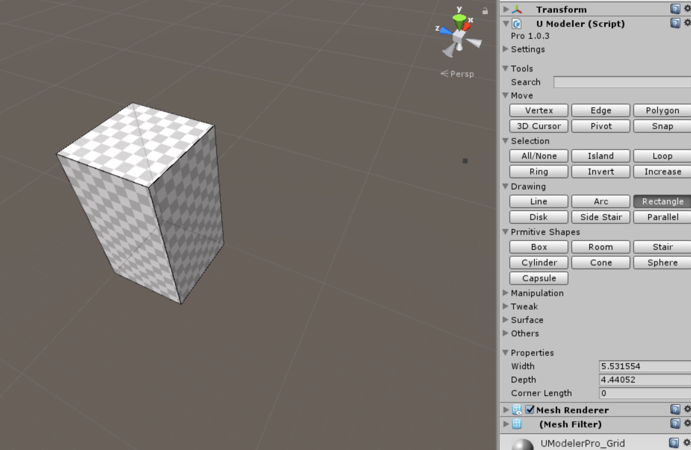

UModeler 2017¶
Version 2.0.0¶
- UV Editor has been added. See UV Editor
Propertiesin the inspector is displayed under the group of the selected tool.- Added the clone of the selected polygons.
FreezeXForm Tool- Renamed toBake Transformand divided it into Scale and Rotation.- Added generating Lightmap UVs in
Local Settings ToolunderMiscgroup in the inspector.Arrange UV Islandsmenu item has been added in UModeler tool menu.- Made a new UModeler game object created under the parent object when clicking on “Game Object” or “Collider Object” button.
Grid Sizefield has been added toSettings/Snapto make it possible to specify any grid size.Mirror Tool- Now you can move the mirror plane byLMB Dragover the arrow of the mirror plane.Flip Toolhas been added inTweakgroup.Align Toolhas been added inTweakgroup.UV Tool- Added moving UVs by pressing Up or Down arrow keys holding CTRL.Combine Tool- PressingSPACEwill combine the selected vertices inCombine Tool.Vertex/Edge/Polygon Tool- 1D Snapping has been added. It works by moving a cursor to another vertex holdingCTRLwhile dragging the translation gizmo.Vertex/Edge/Polygon Tool-Insert Vertexproperty has been added.- Change -
PushPull Tool: RenamedDraw Edgesproperty toContinuous.- Change -
Multiple PushPullbutton has been added.- Change -
Cut Tool: Made Cutting direction flipped by pressingSPACEwhileLMBDragging- Change -
Backface Tool: Renamed toLocal Settings- Change -
Copy Tool: Renamed toDuplicate Tool- Change -
Game ObjectandCollider Objectbuttons have been moved toMiscgroup.- Bugfix - Not displaying triangulation result has been fixed.
- Bugfix - Spotty lightmap bug has been fixed.
Version 1.0.6/1.0.5¶
## Improvements & Features
- Improved the About dialog box.
- Added a button for object mode to the inspector
- Added two buttons for creating new object and new collider object to the UModeler inspector
- Added painting polygons in a material ID by holding SHIFT + LMB drag in Material tool
- Added painting polygons in a color by holding SHIFT + LMB drag in Material tool.
- Added Input viewer next to Status box to the scene view.
- Improved the way of displaying and setting materials in Material tool
## Fixes & Tweaks
- Fixed getting slow and unresponsive happening after a UModeler prefab is loaded, the GUI gets slow and unresponsive
- Scaled up and straightened up the status text on scene view
- Made Vertices/Edges/Polygons selected when LMB is up after dragging to avoid a lag.
- Made a system child object called __Modeler_Specific__ invisible.
- Made selection of several polygons by CTRL + LMB drag in Material tool.
- Fixed a bug about getting gizmos hided when multiple UModeler objects are selected
- Hided mesh filter component and materials in the inspector
- Pro has been left out so that UModeler Pro became just UModeler.
- Excluded UModeler component in game build
- Enabled to get shortcut input possible in the inspector.
- Removed Resources folder and moved all data there to UModeler folder reorganizing the folder structure.
Version 1.0.4¶
- Fix - Preferece for key setting : Wrong positions of UIs in Preference for setting up keys on Unity 5.6
- Fix - Transform tool : Flickering gizmos in Vertex/Edge/Polygon tools when more 2 views are open.
- Fix - Display : Incorrect vertex cubes’ size bug.
- Fix - Combine Tool : A bug about not working the merge of co-planar polygons.
- Fix - Gizmo : A bug about getting a gizmo locked when UModeler object exits.
- Improvement - Transform Tool : Made the way of changing gizmo same as the way of Unity. The gizmo can be switched to another by clicking on the cursor icons as well as pressing W,E and R.

- Improvement - Rectangle Tool : Added Corner Segment property in Rectangle tool to enable to change how many edges are placed in a rounded corner.

Version 1.0.3¶
- Feature - Combine Tool : Added “Combine Vertex” button in the inspector to enable to merge vertices without leaving Combine tool.

- Feature - Arc Tool : Added “Close” property to enable to create a closed shape.

- Feature - Rectangle Tool : Added “Corner Length” property to support rounded corners.

- Fix - Export tool : Fixed x-axis flipped coordinates bug as exporting to .OBJ file.
Version 1.0.2¶
- Obj Exporter has been fixed so that duplicated positions, uv coordinates and normals are handled.
- Remove Doubles Tool - The default value of the Distance property has been changed from 0.0001 to 1.0.
- Push/Pull tool - DrawMargins property has been renamed to DrawEdges.
- ShearTool has been renamed to CutTool.
Version 1.0.1¶
- Fixed a bug about the 3D cursor, which didn’t work as having the selected elements rotated or scaled around 3D cursor.
- Added .prefab export.
- Fixed a bug in .obj exporter so that material information will be exported well.
- Windows Material has been changed so that Standard shadow is used.
- Assigned the window material used in the building in Demo.unity to the window, where a proper texture wasn’t assigned, in the modern building
- Fixed a bug about not visible gizmo when the other object get selected from the modeler object on the Hierarchy window.
- Fixed “Convert from Mesh” bug so that a mesh with several materials can be converted to UModeler object well.